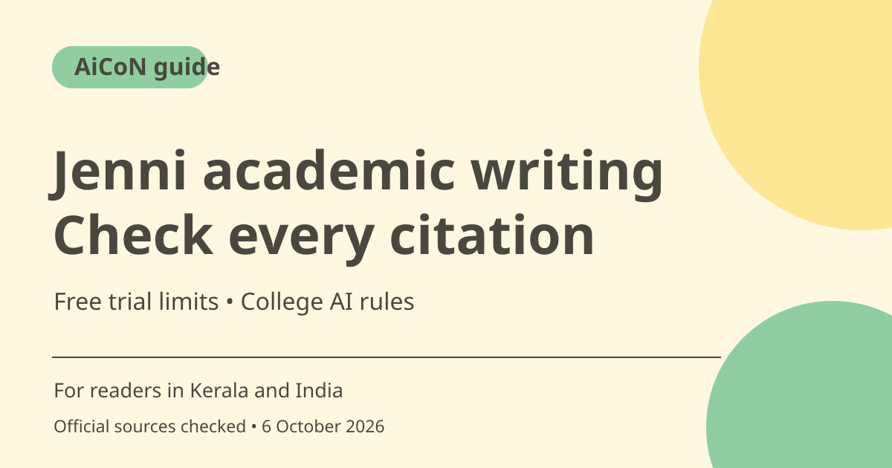

Jenni AI writing: free limits, citations and source checks
Jenni combines academic writing, source management and AI assistance. Free includes limited autocomplete and other trial allowances. A citation suggested by AI still needs checking against the original paper, and your college's rules decide what assistance you may use.

What is Jenni?
Jenni offers an editor with autocomplete, citation search and paper-related tools. The homepage presents writing and citing in one place. Treat suggestions as drafts you control, not as a substitute for understanding the research. Do not submit a polished AI paragraph without checking the evidence and your institution's policy.
Who is it useful for in Kerala and India?
A student or researcher may use it to organise sources, build an outline or improve a draft they have already reasoned through. The relevant question is not only whether the tool works, but whether your course, supervisor or publisher allows that kind of help. Keep records of original sources and disclose assistance where required.
The Free plan has several different clocks
Current pricing lists ten autocompletes per day, ten PDF uploads and five chat messages. Official billing documentation says Free chat messages are a one-time allocation, not five every day. It also calls Free workflow runs a lifetime allowance and says autocomplete resets at midnight UTC. Do not describe all Free quotas as daily or monthly.
Official pages disagree on some allowances
The pricing page shows three Free AI edits while billing documentation lists five one-time edits. Pricing advertises citation styles for Free, while the documentation comparison marks citation-style access differently. This guide does not choose a more generous number or promise full style access. Check Settings and Usage in your account, and ask support if these details matter.
Source search does not prove a claim
Citation documentation describes adding sources through Cite or the @ shortcut, from the Library or web search, and manually entering a custom citation. It also allows preprints by default under a document setting. Check author, title, year, DOI and the actual supporting passage. A plausible reference list is not evidence that every sentence is supported.
Paid pricing and academic integrity
Pricing displays Plus US$12 and Pro US$29 beside a monthly/annual toggle. At a rough ~₹96.43/USD estimate, those figures are about ~₹1,157 and ~₹2,796, but the billing period was not safely mapped from text alone. Check the in-app local currency and full charge. More paid usage does not change the obligation to follow academic rules.
How to use it, step by step
- Open jenni.ai and review the current Free allowances before creating an account.
- Create a document with a clear topic and headings. Write your own starting explanation so autocomplete has meaningful context.
- Upload sources you are entitled to use, within account limits. Keep unpublished or confidential material out unless permitted.
- Use a small autocomplete suggestion and accept only text that matches your meaning. Review facts before expanding the draft.
- Click Cite or type @ to search by source details such as title, author or DOI. Choose the correct source, not just a similar title.
- Open the original paper and verify each claim. Inspect the document's preprint and Library/external citation settings.
- Check Settings > Usage for remaining allowances. Before an upgrade, confirm local billing, renewal, export/style access and your institution's AI policy.
Cost, eligibility and limits
| Free | ₹0. Ten daily autocompletes, ten PDF uploads and five chat messages listed; documentation says chat is one-time, not recurring. |
|---|---|
| Conflicting limits | Pricing says three Free edits; billing docs say five. Citation-style availability also differs. Confirm your account rather than relying on the higher allowance. |
| Paid references | US$12 Plus and US$29 Pro are about ~₹1,157 and ~₹2,796 at a rough rough ~₹96.43/USD estimate. Billing mode and final local charge need checking. |
| Research caution | Citations and AI suggestions need source verification. Preprints and non-peer-reviewed material can be suggested depending on settings. |
Frequently asked questions
Are five Free chat messages available every day?
No. Billing documentation describes them as a one-time allocation.
Does an inserted citation prove the statement?
No. Read the original source and confirm the supporting passage and limitations.
Which Free edit allowance is right?
The checked official pages differ. Use the allowance shown in your account and confirm with support if needed.
Official sources
- PTI 6 October exchange-rate report used for rough INR estimates
- Official access
- Pricing
- Billing and quota documentation
- Autocomplete
- Citation management
Checked 6 October 2026. Features and prices can change. This is a guide, not a personal product test.